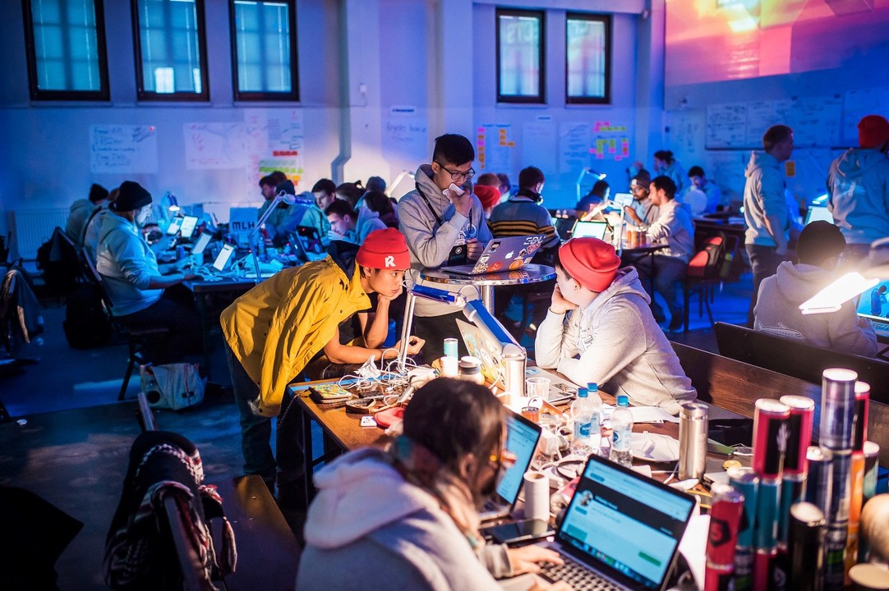

Introduction: Should You Pursue a Master’s in Data Science?
To apply or not to apply? You might have this question right now regarding whether you want to pursue a master’s in data science. I was once in your position as well, grappling with uncertainty. I am currently in the University of British Columbia’s master of data science program, so I will provide some advice on whether it is a good idea for you to pursue a data science master program or not. I wish I had this knowledge before I joined the program, so I hope this will help you make your decisions! I will discuss good reasons why you would want to pursue the program. If you want to blend your knowledge of both computer science and statistics into fruitful projects, then this program is for you. Furthermore, if you want to meet driven future data scientists, this program is a great way to meet them. Third, if you like solving challenging problems that go above and beyond what is required of you, you’ll have many opportunities to do that! However, a data science masters is not for you if you simply want to coast by, since this program is anything but calm and peaceful. Also, if you don’t like working on hands-on work applicable to industry work and would prefer memorization courses, this program also wouldn’t be the right fit. I hope my experiences with UBC’s master of data science program will help you decide whether or not you want to pursue a data science program in the future.
Why Pursue a Master’s in Data Science?
Blending Statistics and Computer Science
Why you may want to pursue a data science masters is if you want to blend together your knowledge of statistics and computer science to create useful projects. In my undergrad at the University of Toronto, I had previously only studied statistics and computer science in isolation. Having a minor in both subjects, I realized that each course I took would not have any “cross-contamination” of subjects. This was something that was missing in my undergrad. I would only learn algorithms in my computer science courses, or I would only learn hypothesis testing in my statistics courses. What is great about a data science masters is that you can work on projects that combine the best of both worlds. Instead of simply learning about statistical hypothesis testing, in many labs I had to implement and code it up myself! The learning you will have integrating the two subjects together is immense!
Meeting Driven and Passionate People
Meeting driven people focused on furthering their career prospects and learning more about data science is another reason why you might want to pursue the program. A data science masters is very selective, with programs like UBC having around a 10% acceptance rate. This selects the strongest applicants, and results in fellow students that are very competent and committed to learning all they can about data science. I’ve met many friends who have really helped me supplement my knowledge in data science, and have taught me many concepts that I wasn’t aware of before. What is great about a data science program is that it is not simply going to class and then going home - there is a camaraderie between the students. You will be in class with them from 9:30 AM to 4 PM almost every day, which means you’ll make close friends quickly after spending so much time with each other. If I can’t reiterate this enough, these classmates are some of the smartest people you will have ever met, meaning that they can help you with any questions you may have, and augment your learning by showing you concepts that weren’t even being taught in class.

Opportunities to Go Above and Beyond
Being able to go above and beyond in your learning is one of my favorite aspects of the data science program. If you are the type of person that is perpetually curious and loves to fortify their own learning by going above and beyond, you will have plenty of opportunities to do that in the program. I noticed in high school and undergrad courses that usually the assignments will only have questions that all the students have to answer - without any extra questions for the most curious students. However, that is not the case for the data science program. You’ll have the opportunity to answer tough questions beyond the scope of what is expected of the students in every lab in the form of challenge questions. I think challenge questions are a unique way to really hone in and help you understand a certain topic that you are interested in. Finishing challenge questions shows that you have a commanding grasp on the topic at hand, and that you comprehensively understand the material. I would definitely recommend you to join a data science program if you like to satiate your curiosity and go the extra mile in learning about data science, because you’ll have plenty of opportunity to.
When a Data Science Master’s Might Not Be for You
If You Want to Coast Through
Now, it can’t all be sunshine and rainbows, a data science masters may not be for you if you simply want a program where you want to coast by. Data science programs are tough, so you have to be on it, essentially throughout the whole program. Especially at a data science program like UBC’s, you will go through an entire course’s worth of content within four weeks, which means that missing even a day’s worth of content is missing more than 10% of the course! In high school, maybe you had a few courses that you didn’t like, so you just put the minimum possible effort into completing them. That isn’t really possible in a data science program. This is a program where you will have to work hard, so having a high interest in learning the content of the courses is a must.
If You Dislike Hands-On Learning
Furthermore, a data science masters won’t be a good fit for you if you dislike hands-on work. In university, I noticed a lot of courses that I took would fall into two categories: courses that can be passed through rote memorization, and courses where you have to seriously understand the content and be able to do all the practice problems to pass. The courses in a data science masters definitely fall under the latter category. This is because in each course, there are weekly labs that take many hours to complete. Each lab has many questions where you put in the work of applying what you learned in class. Essentially, simply reading through the course textbook will not get you far - you’ll need a deep understanding of the concepts covered to be able to accurately finish the questions.
Conclusion: Is a Master’s in Data Science Right for You?
In conclusion, deciding whether or not to attend a data science program hinges on your drive, eagerness to learn, and learning style. With a data science masters, you can combine the wealth of knowledge in computer science and statistics courses, being able to work on projects that incorporate topics from both. Additionally, you are able to meet like-minded driven individuals who have a similar passion to learn data science. These people will become great friends, and your learning will be greatly enhanced with their help. Third, you are able to take your learning to the next level with a data science program. You are given constant opportunities to show you comprehensively know the material by working on challenging problems. However, a data science program cannot be recommended if you want to just coast by and relax, because this program is anything but. Furthermore, if your learning style likes memorization over hands-on work, this program isn’t for you either, since every week you will be doing hands-on work to prove your understanding of the concepts. Ultimately, deciding whether you want to attend a data science program is a daunting task, and I hope I helped by providing my experience in UBC’s data science program to help you make your decision!
In summary:
| Factors | Is a Data Science Master’s Right for You? |
|---|---|
| Love blending Stats and CS | ✅ Yes |
| Meeting driven and passionate people | ✅ Yes |
| Prefer hands-on learning | ✅ Yes |
| Like opportunities to go above and beyond | ✅ Yes |
| Want to coast through a program | ❌ No |
| Prefer memorization | ❌ No |